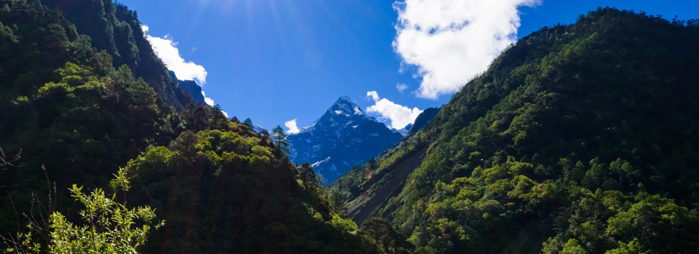

Nestled in the majestic Himalayas, Sikkim's monasteries are spiritual havens that offer a unique glimpse into Tibetan Buddhism. These sacred sites are not just places of worship but living museums of ancient art, culture, and traditions.
What makes Sikkim's monasteries special is their perfect harmony with nature - perched on hilltops, nestled in valleys, or surrounded by forests, each offering breathtaking views and serene atmospheres. The intricate murals, ancient scriptures, and magnificent architecture tell stories of a rich spiritual heritage dating back centuries.
Visitors are always welcome to experience the peaceful chanting of monks, witness colorful prayer flags fluttering in the mountain breeze, and participate in meditation sessions. These monasteries are famous for their preservation of Vajrayana Buddhism and host spectacular festivals like Losar and Saga Dawa that attract pilgrims and tourists from around the world.
Whether you seek spiritual enlightenment, cultural immersion, or simply awe-inspiring beauty, Sikkim's monasteries offer an unforgettable journey into the heart of the Himalayas.